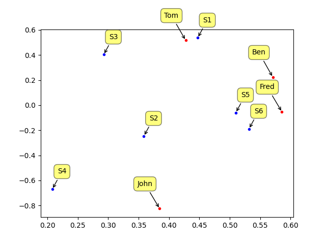

Film tavsiye verilerine kullanarak bazı analizler ve tavsiye yaklaşımlarına bakacağız. Diyelim ki Star Trek (ST) dizisini ne kadar beğendiğini 4 tane kullanıcı sezonlara göre işaretlemiş. Bu örnek veriyi alttaki gibi gösterelim.
from pandas import *
d = np.array(
[[5, 5, 0, 5],
[5, 0, 3, 4],
[3, 4, 0, 3],
[0, 0, 5, 3],
[5, 4, 4, 5],
[5, 4, 5, 5]])
data = DataFrame (d.T,
columns=['S1','S2','S3','S4','S5','S6'],
index=['Ben','Tom','John','Fred'])
print data S1 S2 S3 S4 S5 S6
Ben 5 5 3 0 5 5
Tom 5 0 4 0 4 4
John 0 3 0 5 4 5
Fred 5 4 3 3 5 5Veriye göre Tom, ST dizisinin 3. sezonunu 4 seviyesinde sevmiş. 0 değeri o sezonun seyredilmediğini gösteriyor.
Toplu Tavsiye algoritmaları verideki diğer kişilerin bir ürünü, diziyi, vs. ne kadar beğendiğinin verisinin diğer “benzer” kişilere tavsiye olarak sunabilir, ya da ondan önce, bir kişinin daha almadığı ürünü, seyretmediği sezonu, dinlemediği müziği ne kadar beğeneceğini tahmin eder. 2006 yılında yapılan ünlü Netflix yarışmasının amacı buydu mesela.
Peki benzerliğin kriteri nedir, ve benzerlik nelerin arasında ölçülür?
Benzerlik, ürün seviyesinde, ya da kişi seviyesinde yapılabilir. Eğer ürün seviyesinde ise, tek bir ürün için tüm kullanıcıların verdiği nota bakılır. Eğer kullanıcı seviyesinde ise, tek kullanıcının tüm ürünlere verdiği beğeni notları vektörü kullanılır. 1. sezonu örnek kullanalım,o sezonu beğenen kişilere o sezona benzer diğer sezonlar tavsiye edilebilir. Kişiden hareketle, mesela John’a benzeyen diğer kişiler bulunarak onların beğendiği ürünler John’a tavsiye edilebilir.
Ürün ya da kişi bazında olsun, benzerliği hesaplamak için bir benzerlik ölçütü oluşturmalıyız. Genel olarak bu benzerlik ölçütünün 0 ile 1 arasında değişen bir sayı olmasını tercih edilir ve tavsiye mantığının geri kalanı bu ölçütü baz alacaktır. Elimizde beğeni notlarını taşıyan \(A,B\) vektörleri olabilir, ve bu vektörlerin içinde beğeni notları olacaktır. Vektör içindeki sayıları baz alan benzerlik çeşitleri şöyledir:
Öklit Benzerliği (Euclidian Similarity)
Bu benzerlik \(1 / (1+mesafe)\) olarak hesaplanır. Mesafe karelerin toplamının karekökü (yani Öklitsel mesafe, ki isim buradan geliyor). Bu yüzden mesafe 0 ise (yani iki “şey” arasında hiç mesafe yok, birbirlerine çok yakınlar), o zaman hesap 1 döndürür (mükemmel benzerlik). Mesafe arttıkça bölen büyüdüğü için benzerlik sıfıra yaklaşır.
Pearson Benzerliği
Bu benzerliğin Öklit’ten farklılığı, sayı büyüklüğüne hassas olmamasıdır. Diyelim ki birisi her sezonu 1 ile beğenmiş, diğeri 5 ile beğenmiş, bu iki vektörün Pearson benzerliğine göre birbirine eşit çıkar. Pearson -1 ile +1 arasında bir değer döndürür, alttaki hesap onu normalize ederek 0 ile 1 arasına çeker.
Kosinüs Benzerliği (Cosine Similarity)
İki vektörü geometrik vektör olarak görür ve bu vektörlerin arasında oluşan açıyı (daha doğrusu onun kosinüsünü) farklılık ölçütü olarak kullanır.
\[ \cos\theta = \frac{A \cdot B}{||A||||B||} \]
from numpy import linalg as la
def euclid(inA,inB):
return 1.0/(1.0 + la.norm(inA - inB))
def pearson(inA,inB):
if len(inA) < 3 : return 1.0
return 0.5+0.5*np.corrcoef(inA, inB, rowvar = 0)[0][1]
def cos_sim(inA,inB):
num = float(np.dot(inA.T,inB))
denom = la.norm(inA)*la.norm(inB)
return 0.5+0.5*(num/denom)print np.array(data.ix['Fred'])
print np.array(data.ix['John'])
print np.array(data.ix['Ben'])
print pearson(data.ix['Fred'],data.ix['John'])
print pearson(data.ix['Fred'],data.ix['Ben'])[5 4 3 3 5 5]
[0 3 0 5 4 5]
[5 5 3 0 5 5]
0.551221949943
0.906922851283print cos_sim(data.ix['Fred'],data.ix['John'])
print cos_sim(data.ix['Fred'],data.ix['Ben'])0.898160909799
0.977064220183Şimdi tavsiye mekaniğine gelelim. En basit tavsiye yöntemi, mesela kişi bazlı olarak, bir kişiye en yakın diğer kişileri bulmak (matrisin tamamına bakarak) ve onların beğendikleri ürünü istenilen kişiye tavsiye etmek. Benzerlik için üstteki ölçütlerden birini kullanmak.
Kosinüs Benzerliği ile Tavsiye Örneği
Büyük ölçekte basit kosinüs benzerliği üzerinden tavsiyeleri alttaki
gibi hesaplayabiliriz. Önce [8]’den en son tam dosyayı indirelim, ve zip
dosyasını açalım, base_dir içinde açılmış olsun. Veride kaç
kullanıcı, kaç film olduğu altta raporlandı,
import pandas as pd
base_dir = "/tmp/ml-latest"
ratings = pd.read_csv(base_dir + "/ratings.csv")
print (ratings.userId.nunique(), ratings.movieId.nunique())283228 53889Büyük bir veri dosyası bu. Şimdi beğenilerden kullanıcı-film şeklinde
olacak şekilde bir matris yaratacağız. Çoğu kişi çoğu filmi seyretmediği
için matris seyrek olacak, bu sebeple seyrek matris kodu
csr_matrix kullanılacak,
from scipy.sparse import csr_matrix
sps = csr_matrix((ratings.rating, (ratings.userId , ratings.movieId)))Artık sps içinde kullanıcı-film kordinatlarından oluşan
bilgiler var. Mesela 1’inci kullanıcının 307’üncü film beğenisi için
print (sps[1,307])3.5Şimdi kendi beğenilerimi bir vektör üzerine kodlamanın zamanı geldi, böylece bu vektör ile tüm kullanıcı-film matrisi üzerinde bir kosinüs benzerliği hesaplayınca bizim beğenilere en yakın olan diğer kullanıcıların mesafesini bir diğer vektör içinde edebiliriz.
mov = pd.read_csv(base_dir + "/movies.csv",index_col="title")['movieId'].to_dict()
picks = {"Swordfish (2001)": 5.0, "Every Which Way But Loose (1978)": 5.0,
"Sideways (2004)": 5.0}
tst = np.zeros((1,sps.shape[1]))
for p in picks: tst[0,mov[p]] = picks[p]Benzerlik hesabını işletelim,
from sklearn.metrics.pairwise import cosine_similarity
similarities = cosine_similarity(sps, tst)
print (similarities.shape)(283229, 1)Bu vektörün büyüklüğü verideki kullanıcı sayısı kadar, bu mantıklı.
Artık tavsiye vermek için bu kullanıcılara olan uzaklığa göre
yakından-uzağa şekilde vektörü sıralayacağız, argsort ile
sıralama yapınca bize sonuçlar indis vektörü olarak verilecek (yani en
yakın öğenin indisi, indis vektöründe en sonda) böylece bu vektörü gezip
en yakın kullanıcıları bulabiliriz, ve eğer istersek, onların en çok
beğendiği filmleri toplayıp bir tavsiye listesi oluşturabiliriz.
m = np.argsort(similarities[:,0])
print (sps[m[-10],:]) (0, 145) 3.5
(0, 805) 4.0
(0, 1061) 4.0
(0, 2013) 3.0
(0, 3173) 4.0
(0, 4344) 4.0Üstte en yakın 10’uncu kullanıcının beğenilerini görüyoruz. Kodları film ismine çevirmek için alttakini işletelim, ve filmlerden birine bakalım,
movi = pd.read_csv(base_dir + "/movies.csv",index_col="movieId")['title'].to_dict()
print (movi[145])Bad Boys (1995)Bu iyi bir tavsiye; ben beğeni listeme koymamıştım ama filmi biliyorum, ve aksiyon filmi olarak güzeldi.
Nihai listeyi oluşturma, tekrarlananları, zaten seyredilmiş olanları
filtreleme kodlarını okuyuculara ödev olsun. Bazı tiyolar seyrek matris,
ya da vektör üzerinde nonzero çağrısı içi dolu öğelerin
indisini ve değerini döndürür, bunları kullanarak bir nihai tavsiye
sonucu oluşturabiliriz.
Not: Üstte hazır cosine_similarity çağrısı kullanıldı,
bu kod bazı ek servisler sunuyor bize, mesela normalize etmek, seyrek
matrislerle iş yapabilmek gibi. Fakat o fonksiyonun kodlamasının
detayına baksak daha önce gösterdiğimiz cos_sim çağrısı ile
benzer olduğunu görürdük.
SVD
Eğer boyut azaltma tekniği kullanmak istiyorsak SVD yöntemi burada da işimize yarar.
\[ A = USV \]
elde edeceğimiz için, ve \(S\) içindeki en büyük değerlere tekabül eden \(U,V\) değerleri sıralanmış olarak geldiği için \(U,V\)’nin en baştaki değerlerini almak bize “en önemli” blokları verir. Bu en önemli kolon ya da satırları alarak azaltılmış bir boyut içinde benzerlik hesabı yapmak işlemlerimizi hızlandırır. Bu azaltılmış boyutta kümeleme algoritmalarını devreye sokabiliriz; \(U\)’nun mesela en önemli iki kolonu bize iki boyuttaki sezon kümelerini verebilir, \(V\)’nin en önemli iki (en üst) satırı bize iki boyutta bir kişi kümesi verebilir.
O zaman beğeni matrisi üzerinde SVD uygulayalım,
from numpy.linalg import linalg as la
U,Sigma,V=la.svd(data, full_matrices=False)
print data.shape
print U.shape, Sigma.shape, V.shape
u = U[:,:2]
vt=V[:2,:].T
print 'u', u
print 'vt', vt
print u.shape, vt.shape(4, 6)
(4, 4) (4,) (4, 6)
u [[-0.57098887 -0.22279713]
[-0.4274751 -0.51723555]
[-0.38459931 0.82462029]
[-0.58593526 0.05319973]]
vt [[-0.44721867 -0.53728743]
[-0.35861531 0.24605053]
[-0.29246336 -0.40329582]
[-0.20779151 0.67004393]
[-0.50993331 0.05969518]
[-0.53164501 0.18870999]]
(4, 2) (6, 2)degerleri elimize gecer. U ve VT matrisleri
def label_points(d,xx,yy,style):
for label, x, y in zip(d, xx, yy):
plt.annotate(
label,
xy = (x, y), xytext = style,
textcoords = 'offset points', ha = 'right', va = 'bottom',
bbox = dict(boxstyle = 'round,pad=0.5', fc = 'yellow', alpha = 0.5),
arrowprops = dict(arrowstyle = '->', connectionstyle = 'arc3,rad=0'))
plt.plot(u[:,0],u[:,1],'r.')
label_points(data.index, u[:, 0], u[:, 1],style=(-10, 30))
plt.plot(vt[:,0],vt[:,1],'b.')
label_points(data.columns, vt[:, 0], vt[:, 1],style=(20, 20))
plt.savefig('svdrecom_1.png')
Çok güzel! SVD bize ürün bazında sezon 5 ve 6’nin bir küme oluşturduğunu, Ben ve Fred’in de kişi bazında ayrı bir küme olduğunu gösterdi.
Azaltılmış boyutları nasıl kullanırız? Yeni bir kişiyi (mesela Bob) ele alınca, bu kişinin verisini öncelikle aynen diğer verilerin indirgendiği gibi azaltılmış boyuta “indirgememiz” gerekiyor. Çünkü artık işlem yaptığımız boyut orası. Peki bu indirgemeyi nasıl yaparız? SVD genel formülünü hatırlarsak,
\[ A = USV \]
Azaltılmış ortamda
\[ A = U_k S_k V_k \]
Diyelim ki gitmek istediğimiz nokta azaltılmış \(U\), o zaman \(U_k\)’yi tek başına bırakalım (dikkat, mesela \(V\)’nin tersini aldık, fakat bir matrisin tersini almak için o matrisin kare matris olması gerekir, eğer kare değilse, ters alma işlemi taklit ters alma işlemi -pseudoinverse- ile gerçekleştirilir, daha fazla detay için [6])
\[ A V_k^{-1} = U_k S V_k V_k^{-1} \]
\(U_k,V_k\) matrisleri birimdik (orthonormal), o zaman \(V_k^{-1}V_k = I\) olacak, yani yokolacak
\[ A V_k^{-1} = U_k S \]
Benzer şekilde
\[ A V_k^{-1} S^{-1} = U_k \]
Çok fazla ters alma işlemi var, her iki tarafın devriğini alalım
\[ (S^{-1})^T (V_k^{-1})^T A^T = U_k^T \]
\(V_k^{-1} = V_k^T\) olduğunu biliyoruz. Nasıl? Çünkü $ V_k^TV_k = I $, aynı şekilde $ V_k^{-1}V_k = I $. Ters alma işleminin özgünlüğü (üniqueness) sebebiyle \(V_k^{-1} = V_k^T\) olmak zorundadır \(\Box\)
Demek ki üstteki formül devriğin devriğini almak demektir, yani tekrar başa dönmüş oluyoruz, demek ki \(V_k\) değişmeden kalıyor
\[ (S^{-1})^T V_k A^T = U_k^T \]
\(S\) ise köşegen matris, onun tersi yine köşegen, köşegen matrisin devriği yine kendisi
\[ S^{-1} V_k A^T = U_k^T \]
Bazı kod ispatları, \(u\)’nun birimdik olması:
print np.dot(u.T,u)[[ 1.00000000e+00 4.83147593e-18]
[ 4.83147593e-18 1.00000000e+00]]Doğal olarak 1e-17 gibi bir sayı sıfıra çok yakın, yani
sıfır kabul edilebilir. Devrik ve tersin aynı olduğunu gösterelim: İki
matrisi birbirinden çıkartıp, çok küçük bir sayıdan büyüklüğe göre
filtreleme yapalım, ve sonuç içinde bir tane bile True olup olmadığını
kontrol edelim,
print not any(U.T-la.inv(U) > 1e-15)TrueYeni Bob verisi
bob = np.array([5,5,0,0,0,5]) O zaman
print bob.T.shape
print u.shape
S_k = np.eye(2)*Sigma[:2]
bob_2d = np.dot(np.dot(la.inv(S_k),vt.T),bob.T)
print bob_2d(6,)
(4, 2)
[-0.37752201 -0.08020351]Not: bob.T üstteki formüldeki \(A^T\) yerine geçecek; formülü tekrar
düzenlerken \(A\) üzerinden işlem
yaptık, fakat formülü “\(A\)’ya eklenen
herhangi bir yeni satır’’ olarak ta görebiliriz, ki bu örneğimizde
Bob’un verisi olurdu.
Üstte eye ve Sigma ile ufak bir takla
attık, bunun sebebi svd çağrısından gelen
Sigma sonucunun bir vektör olması ama üstteki işlem için
köşegen bir “matrise” ihtiyacımız olması. Eğer birim (identity)
matrisini alıp onu Sigma ile çarparsak, bu köşegen matrisi
elde ederiz.
Şimdi mesela kosinüs benzerliği kullanarak bu izdüşümlenmiş yeni vektörün hangi diğer vektörlere benzediğini bulalım.
for i,user in enumerate(u):
print data.index[i],cos_sim(user,bob_2d)Ben 0.993397525045
Tom 0.891664622942
John 0.612561691287
Fred 0.977685793579Sonuca göre yeni kullanıcı Bob, en çok Ben ve Fred’e benziyor. Sonuca eriştik! Artık bu iki kullanıcının yüksek not verdiği ama Bob’un hiç not vermediği sezonları alıp Bob’a tavsiye olarak sunabiliriz.
SVD ile Veriyi Oluşturmak
import pandas as pd
import numpy.linalg as lin
import numpy as np
import scipy.sparse.linalg as lin
import scipy.sparse as sps
d = np.array(
[[ 5., 5., 3., np.nan, 5., 5.],
[ 5., np.nan, 4., np.nan, 4., 4.],
[ np.nan, 3., np.nan, 5., 4., 5.],
[ 5., 4., 3., 3., 5., 5.],
[ 5., 5., np.nan, np.nan, np.nan, 5.]
])
users = ['Ben','Tom','John','Fred','Bob']
seasons = ['0','1','2','3','4','5']
data = pd.DataFrame (d, columns=seasons,index=users)
print data
avg_movies_data = data.mean(axis=0)
print avg_movies_data
data_user_offset = data.apply(lambda x: x-avg_movies_data, axis=1)
A = sps.coo_matrix(np.nan_to_num(np.array(data_user_offset)))
U,S,VT = lin.svds(A,k=3)
def predict(u,i):
offset = np.dot(U[u,:],VT[:,i])
r_ui_hat = offset + avg_movies_data.ix[i]
return r_ui_hat, offset
print 'Bob', predict(users.index('Bob'),2)
print 'Tom', predict(users.index('Tom'),1) 0 1 2 3 4 5
Ben 5 5 3 NaN 5 5
Tom 5 NaN 4 NaN 4 4
John NaN 3 NaN 5 4 5
Fred 5 4 3 3 5 5
Bob 5 5 NaN NaN NaN 5
0 5.000000
1 4.250000
2 3.333333
3 4.000000
4 4.500000
5 4.800000
dtype: float64
Bob (3.3115641365499888, -0.021769196783344661)
Tom (4.295419370813935, 0.045419370813934629)Alternatif Yöntem
Bir diğer yöntem [1] yeni Bob verisi \(y\)’yi alıp
\[ z = VV^Ty \]
olarak \(z\)’ye çevirmek. Bu durumda aslında cebirsel olarak hiçbir şey yapmamış oluyoruz,
\[ z = VV^Ty = Iy = y\]
ve iteratif sayısal çoğu algoritmanın temelini de bu oluşturuyor. Kavramsal olarak \(y\)’yi alıp \(V\) uzayına “yansıtıyoruz’‘. Daha kavramsal olarak kullanıcı seçimlerini temsil eden veri için \(V\) bir “kordinat sistemi’’ oluşturmuştur (SVD’nin doğal sonucu olarak) ve her veri noktası bu kordinat sistemi, bu bazın vektörlerinin bir kombinasyonu olarak temsil edilebilir durumdadır (SVD için kullanılan veriden bahsediyoruz). Bu durumda yeni veriyi oraya yansıtmak doğal bir işlemdir. Tabii yansıtıp sonra geri geliyoruz, yani başlangıçtaki boyutlara / hale dönüyoruz, bu olurken aynı zamanda Bob verisinin boş noktaları en makul tahminlerle”doldurulmuş’’ oluyor.
from numpy.linalg import linalg as la
U,Sigma,V=la.svd(data, full_matrices=False)
print data.shape
print U.shape, Sigma.shape, V.shape
u = U[:,:2]
vt=V[:2,:].T
print data
print 'bob', bob
y = bob
for i in range(3):
z = np.dot(vt,np.dot(vt.T,y))
print z
z[y>0] = y[y>0]
print z(4, 6)
(4, 4) (4,) (4, 6)
S1 S2 S3 S4 S5 S6
Ben 5 5 3 0 5 5
Tom 5 0 4 0 4 4
John 0 3 0 5 4 5
Fred 5 4 3 3 5 5
bob [5 5 0 0 0 5]
[ 3.26615993 2.27206826 2.16256132 1.04609626 3.37952362 3.45858088]
[ 3.26615993 2.27206826 2.16256132 1.04609626 3.37952362 3.45858088]
[ 3.26615993 2.27206826 2.16256132 1.04609626 3.37952362 3.45858088]
[ 5. 5. 2.16256132 1.04609626 3.37952362 5. ]Sonuca göre Bob büyük ihtimalle S5’i sevecektir, not tahminleri arasında en yüksek puan orada tahmin edilmiş, ki bu daha önceki Ben ve Fred benzerlik tahminleri ile uyumlu.
Not: Döngüde \(z\)’nin hep aynı satır olması kafa karışıklığı yaratmasın, bu çok ufak bir veri seti, daha büyük veri setlerdinde bu değişim görülecektir.
İteratif işlem sözde kod (pseudocode) olarak,
Algoritma imputed_svd
while \(z\)’deki
değişim azalıncaya kadar (convergence)En son projemizde üstteki işlemin en iyi sonuçlar verdiğini gözlemledik.
Movielens 1M Verisi
Bu veri seti 6000 kullanıcı tarafından yaklaşık 4000 tane filme verilen not / derece (rating) verisini içeriyor, 1 milyon tane not verilmiş, yani 4000 * 6000 = 24 milyon olasılık içinde sadece 1 milyon veri noktası dolu. Bu oldukça seyrek bir matris demektir.
Verinin ham hali diğer ders notlarımızı içeren üst dizinlerde var,
veriyi SVD ile kullanılır hale getirmek için bu dizindeki
movielens_prep.py adlı script kullanılır. İşlem bitince
movielens.csv adlı bir dosya script’te görülen yere
yazılacak. Bu dosyada olmayan derecelendirmeler, verilmemiş notlar boş
olacaktır. Bu boşlukları sıfırlarsak, seyrek matrisi o noktaları atlar.
Ardından bu seyrek matris üzerinde seyrek SVD işletilebilir. Bu normal
SVD’den daha hızlı işleyecektir.
Tavsiye kodlamamız için yazının başında anlatılan tekniği kullanacağız, film verisi üzerinde boyut azaltılması yapılacak, benzer kullanıcı bulunacak, ve herhangi bir yeni kullanıcı / film kombinasyonu için bu diğer benzer kullanıcının o filme verdiği not baz alınacak.
Veriyi eğitim ve test olarak iki parçaya böleceğiz. SVD eğitim bölümü üzerinde işletilecek.
Bu bağlamda, önemli bir diğer konu eksik veri noktalarının SVD
sonuçlarını nasıl etkileyeceği. Sonuçta eksik yerler nan,
oradan sıfır yapılıp ardından seyrek matris kodlaması üzerinden
“atlanıyor” olabilir, fakat bu değerler atlanıyor (yani hızlı işleniyor,
depolanıyor) olsa bile, onların sıfır olmasının bir anlamı yok mudur?
Evet vardır. Not bakımından sıfır da bir not’tur, ve bu sebeple
sonuçları istenmeyen biçimde etkileyebilir.
O zaman mevcut veriyi öyle bir değiştirelim ki verilmemiş notlar, yani sıfır değerleri sonucu fazla değiştirmesin.
Bunu yapmanın yollarından biri her film için bir ortalama not değeri hesaplamak, ve bu ortalama değeri o filme verilen tüm not değerlerinden çıkartmaktır. Bu işleme “sıfır çevresinde merkezlemek” ismi de verilir, hakikaten mesela film j için ortalama 3 ise, 5 değeri 2, 3 değeri sıfır, 2 değeri -1 haline gelecektir. Bu bir ilerlemedir çünkü ortalama 3 değeri zaten bizim için “önemsiz” bir değerdir, tavsiye problemi bağlamında bizim en çok ilgilendiğimiz sevilen filmler, ve sevilmeyen filmler. Bu değerler sırasıyla artı ve eksi değerlere dönüşecekler, ve SVD bu farklılığı matematiksel olarak kullanabilme yeteneğine sahip.
Altta Pandas mean çağrısı ile bu işlemin yapıldığını
görüyoruz, dikkat, Pandas dataframe içinde nan değerleri
olacaktır, ve Pandas bu değerleri atlaması gerektiğini bilir, yani bu
değerler ortalamaya etki etmez. Ardından merkezleme işlemi eğitim verisi
üzerinde uygulanıyor.
import pandas as pd, os
import scipy.sparse as sps
df = pd.read_csv("%s/Downloads/movielens.csv" % os.environ['HOME'] ,sep=';')
print df.shape
df = df.ix[:,1:] # id kolonunu atla
df = df.ix[:,:3700] # sadece filmleri al
df_train = df.copy().ix[:5000,:]
df_test = df.copy().ix[5001:,:]
df_train[np.isnan(df_train)] = 0.0
movie_avg_rating = np.array(df_train.mean(axis=0))
df_train = df_train - movie_avg_rating
dfs_train = sps.coo_matrix(df_train)
df_train = np.array(df_train)
df_test = np.array(df_test)
print df_train.shape
print df_test.shape
__top_k__ = 10
import scipy.sparse.linalg as slin
import scipy.linalg as la
U,Sigma,V=slin.svds(dfs_train,k=__top_k__)
print U.shape, Sigma.shape, V.shape
Sigma = np.diag(Sigma)(6040, 3731)
(5001, 3700)
(1039, 3700)
(5001, 10) (10,) (10, 3700)Altta test verisi üzerinde satır satır ilerliyoruz, ve her satır (test kullanıcısı) içinde film film ilerliyoruz. “Verilmiş bir not” arıyoruz (çoğunlukla not verilmemiş oluyor çünkü), ve bulduğumuz zaman artık elimizde test edebileceğimiz bir şey var, o notu “sıfırlayıp” vektörün geri kalanını azaltılmış boyuta yansıtıyoruz, ve sonra o boyuttaki tüm diğer \(U\) vektörleri içinde arama yapıyoruz, en yakın diğer kullanıcıyı buluyoruz ve onun bu filme verdiği notu tahminimiz olarak kullanıyoruz.
Altta eğer bulunan diğer kullanıcı o filme not vermemişse, basitleştirme amaçlı olarak, o filmi atladık. Gerçek dünya şartlarında filme not vermiş ve yakın olan (en yakın olmasa da) ikinci, üçüncü kullanıcılar bulunup onların notu kullanılabilir. Hatta en yakın k tane kullanıcının ortalaması alınabilir (o kullanıcılar kNN gibi bir metotla bulunur belki), vs.
def euclid(inA,inB):
return 1.0/(1.0 + la.norm(inA - inB))
rmse = 0; n = 0
for i,test_row in enumerate(df_test):
for j, test_val in enumerate(test_row):
# nan olmayan bir not buluncaya kadar ara
if np.isnan(test_val): continue
# bulduk, test satirini tamamen kopyala ve bulunan notu silerek
# onu nan / sifir haline getir cunku yansitma (projection) oncesi
# o notu 'bilmiyormus gibi' yapmamiz lazim.
curr = test_row.copy()
curr[j] = np.nan
curr[np.isnan(curr)] = 0.
proj_row = np.dot(np.dot(la.inv(Sigma),V),curr)
sims = np.array(map(lambda x: euclid(x, proj_row), U[:,:__top_k__]))
isim = np.argmax(sims)
# eger bulunan kullanici o filme not vermemisse atla
if np.isnan(df.ix[isim, j]): continue
# egitim verisinde notlar sifir etrafinda ortalanmis, tekrar
# normal haline dondur
est = df_train[isim, j]+movie_avg_rating[j]
# gercek not
real = df_test[i, j]
print i, 'icin en yakin', isim, 'urun',j, 'icin oy', est, 'gercek', real
rmse += (real-est)**2
n += 1
break # her kullanici icin tek film test et
if i == 20: break # 20 kullanici test et
print "rmse", np.sqrt(rmse / n)0 icin en yakin 1903 urun 144 icin oy 5.0 gercek 5.0
1 icin en yakin 239 urun 144 icin oy 5.0 gercek 5.0
2 icin en yakin 2045 urun 844 icin oy 4.0 gercek 4.0
3 icin en yakin 4636 urun 0 icin oy 3.0 gercek 4.0
4 icin en yakin 139 urun 845 icin oy 4.0 gercek 5.0
5 icin en yakin 427 urun 1107 icin oy 4.0 gercek 5.0
6 icin en yakin 3620 urun 31 icin oy 4.0 gercek 4.0
7 icin en yakin 1870 urun 0 icin oy 4.0 gercek 3.0
8 icin en yakin 4816 urun 106 icin oy 5.0 gercek 5.0
9 icin en yakin 3511 urun 0 icin oy 3.0 gercek 4.0
10 icin en yakin 3973 urun 1212 icin oy 5.0 gercek 4.0
11 icin en yakin 2554 urun 287 icin oy 4.0 gercek 5.0
12 icin en yakin 4733 urun 31 icin oy 4.0 gercek 3.0
13 icin en yakin 2339 urun 9 icin oy 4.0 gercek 3.0
14 icin en yakin 3036 urun 10 icin oy 4.0 gercek 3.0
15 icin en yakin 2748 urun 253 icin oy 5.0 gercek 5.0
16 icin en yakin 450 urun 16 icin oy 4.0 gercek 4.0
17 icin en yakin 1133 urun 9 icin oy 5.0 gercek 2.0
18 icin en yakin 3037 urun 253 icin oy 5.0 gercek 4.0
19 icin en yakin 1266 urun 107 icin oy 3.0 gercek 3.0
20 icin en yakin 537 urun 253 icin oy 5.0 gercek 5.0
rmse 0.975900072949Sonuç fena değil. Tavsiye programlarında RMSE 0.9 civarı iyi olarak bilinir, Netflix yarışmasında [3] mesela kazanan algoritma RMSE 0.85’e erişmiştir.
Kaynaklar
[1] Grigorik, SVD Recommendation System in Ruby, http://www.igvita.com/2007/01/15/svd-recommendation-system-in-ruby
[2] Harrington, P., Machine Learning in Action
[3] Wikipedia, Netflix Prize, http://en.wikipedia.org/wiki/Netflix_Prize
[4] Stack Exchange, How do I use the SVD in collaborative filtering?, http://stats.stackexchange.com/questions/31096/how-do-i-use-the-svd-in-collaborative-filtering
[5] Anand, MORE ON LINEAR STRUCTURE IN DATA, AND SINGULAR VALUE DECOMPOSITION, https://anandoka.wordpress.com/tag/imputed-svd
[6] Bayramlı, Lineer Cebir, Ders 33
[8] Bayramlı, Netflix / Movielens Film Verisi, https://burakbayramli.github.io/dersblog/sk/2015/04/pandas-movielens-netflix-ratings.html